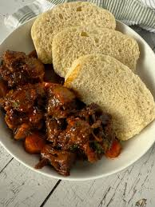

Oxtail Stew with Dombolo

Oxtail stew with dombolo is a classic South African comfort food featuring tender, slow-cooked oxtail in a rich gravy served with warm, fluffy steamed bread.
Ingredients for Oxtail Stew
- 1 kg oxtail pieces
- 2 tablespoons canola oil or olive oil
- 2 onions, chopped
- 2 carrots, sliced
- 2 stalks celery, chopped
- 3 cloves garlic, crushed
- 4 tablespoons tomato paste
- 4 cups beef stock
- Salt and black pepper to taste
Ingredients for Dombolo (Steamed Bread)
- 3 to 4 cups cake flour
- 10 g instant dry yeast
- 1 teaspoon salt
- 2 tablespoons sugar
- 1.5 to 2 cups lukewarm water
Steps
- Brown the Meat: Heat the oil in a heavy-bottomed pot over medium heat. Season the oxtail pieces with salt and pepper, then brown them well on all sides for about 15 minutes.
- Build the Flavor: Remove the meat and sauté the onions, carrots, celery, and garlic until soft. Stir in the tomato paste and cook for another minute.
- Slow Cook the Stew: Return the oxtail to the pot, pour in the beef stock, cover with a tight-fitting lid, and simmer on low heat for 2.5 to 3 hours until the meat is tender and falling off the bone.
- Make the Dough: While the stew cooks, mix the flour, yeast, salt, sugar, and lukewarm water in a bowl to form a soft dough. Knead for 5 minutes and let it rise in a warm spot for 45 minutes.
- Steam the Bread: Shape the risen dough into a ball or smaller portions and place them right on top of the bubbling oxtail stew, or put them in a heat-safe bowl set inside a separate steaming pot. Cover tightly with a lid and steam for about 30 to 45 minutes until the bread is cooked through.
- Serve: Spoon the hot oxtail stew into bowls and top or serve alongside pieces of warm dombolo.
Home